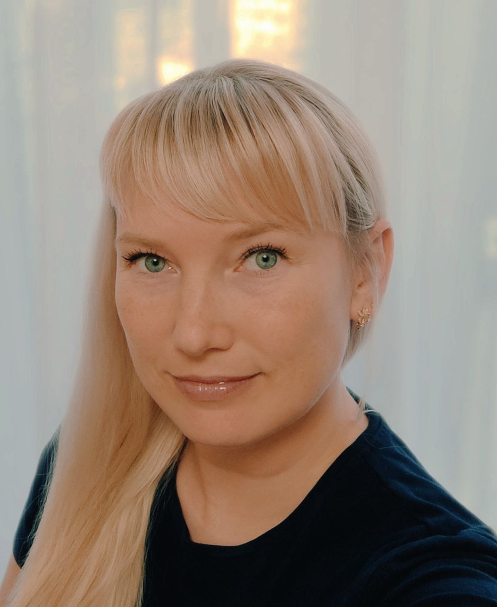

Привет! Меня зовут Морозова Ольга
тел. +7 (961) 783-58-37
е-mail: OVMorozova74@gmail.com
Телеграмм: https://t.me/Morozova_Olga_174
Образование
2016 Южно-Уральский государственный университет, Челябинск
Международный факультет, специализация Управление персоналом
Повышение квалификации
2022 QA Инженер
Онлайн университет Skypro от Skyeng
Ключевые навыки:
- Практические навыки работы с инструментами: Fiddler, Charles, ChromeDevTools, Postman, SOAP UI, Jira, Qase.io, Confluence, PowerShell, Git Bash, Mockoon;
- Работа с REST и SOAP;
- Практический опыт в области HTML и CSS, CI/CD;
- Практический навык декомпозиции продукта: составление интеллект-карты в Miro;
- Практические навыки работы с SQL;
- Опыт создания тестовой документации: чек-листов/чит-листов (Sitechco.ru), тест-кейсов (Qase.io) и баг-репортов (Jira);
- Навыки командной и индивидуальной работы.
Опыт работы:
2022 ООО "Яндекс"
Асессор-тестировщик
ЗАДАЧИ:
- Подробное изучение требований к каждому проекту;
- Тестирование мобильных приложений Яндекс с использованием сниффера;
- Тестирование Web-приложений;
- Заведение баг-репортов в баг-трекинговую систему;
- Использование фермы физических устройств.
2013-2021 ООО " Управление в медицине"
Старший оператор call-центра
ЗАДАЧИ:
- Распределение задач между операторами;
- Составление бесперебойного графика работы;
- Прослушка звонков на соответствие чек-листам и требованиям компании;
- Составление отчётной документации по результатам работы call-центра;
- Работа с операторами на предмет профилактики ошибок, исправление недочётов в работе, мотивации, обучения.
2011-2012 ООО ”Сити-Колл”
Руководитель проектов
ЗАДАЧИ:
- Проектирование системы обучения операторов call-центра;
- Расширение филиальной сети;
- Составление отчетной документации по результатам работы филиала;
- Сопровождение проектов компании на всех этапах;
- Мониторинг качества предоставляемой информации операторами;
- Разработка чек-листов.
О себе:
Мои сильные стороны — хорошие управленческие, лидерские и организационные навыки, позитивный настрой.
Способна эффективно работать, как в команде, так и самостоятельно. С готовностью делюсь опытом и оказываю поддержку коллегам.
Быстро осваиваю новую информацию и затем активно использую её в работе. Хочу повышать свой уровень экспертизы в IT.
Готова к выполнению тестовых заданий.